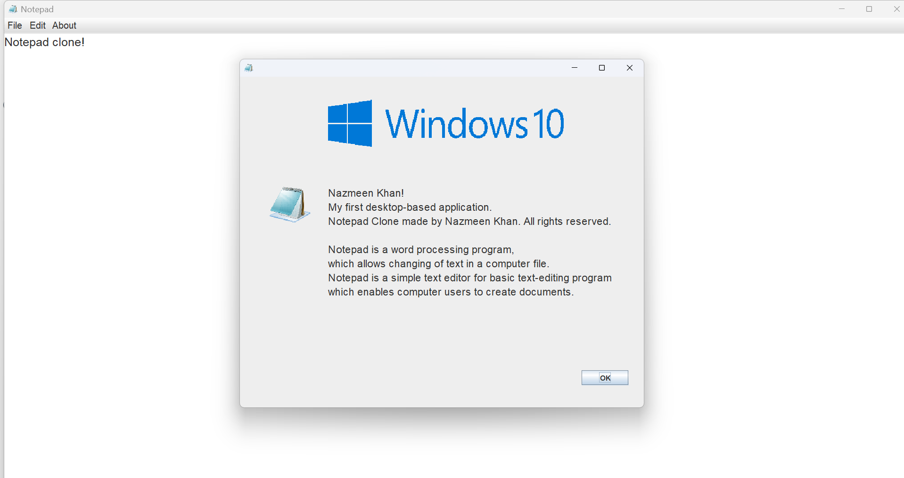
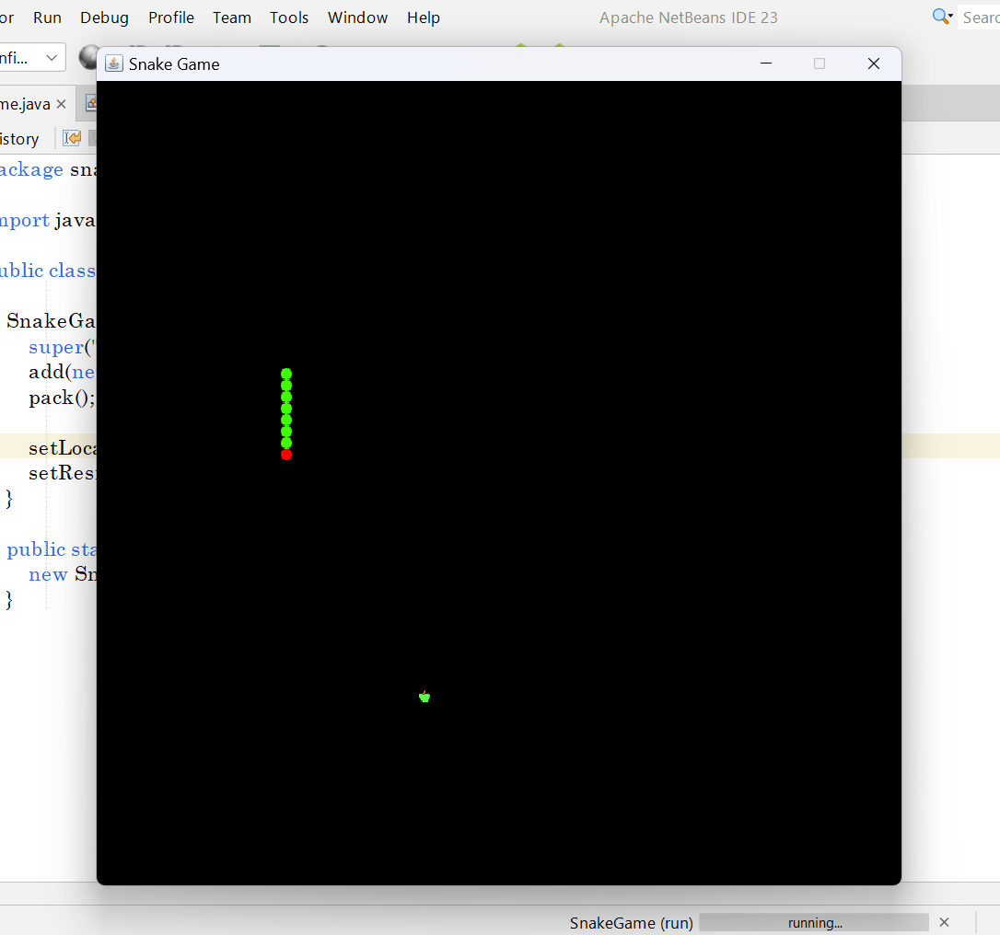
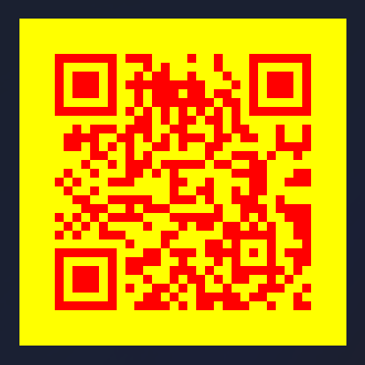
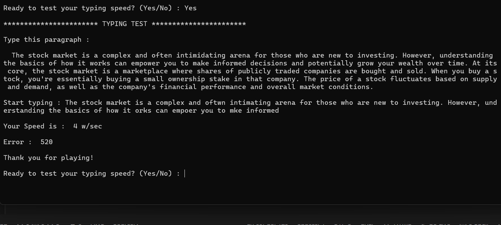
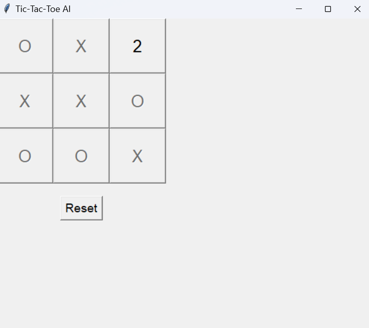

Passionate IT student with a flair for web development and programming, dedicated to turning goals into reality through code and creativity.
I'm an enthusiastic IT student with a strong interest in web development, Python, and Java programming. I am dedicated to honing my technical skills, continuously learning, and striving for excellence. Currently pursuing internship opportunities, I’m eager to gain hands-on experience and make a meaningful contribution to dynamic tech environments. With a passion for innovation and a commitment to my goals, I am ready to take on new challenges and grow within the industry.
A notepad clone using Java Swing JFrame libraries, which works like notepad- creates new files, open saved files, save the files,etc. It can print file and it also has the options- cut, copy, paste as like as the original notepad.
A normal snake game using Java Swing JFrame libraries, in which a snake eats apple and grow in size but when it collides either with the walls or with itself then the game gets over.
A basic Python project which generates the QR code for any website, application, etc using their URL. It can generate simple or multi-colour QR Code.
A basic Python project, which gives a random paragraph to copy and write. Evaluate the speed of user and give result in words/second. It also counts the errors in the paragraph written by the user.
A Python project integrated with Artificial Intelligence, which plays tic tac toe game with the player. After completion of round, it gives the result as AI win; You win; Draw!
Check out my resume to learn more about my professional background, skills, and experiences.
Feel free to download my resume using the link below!!
Contact me on my email --> nazmeenk2210@gmail.com